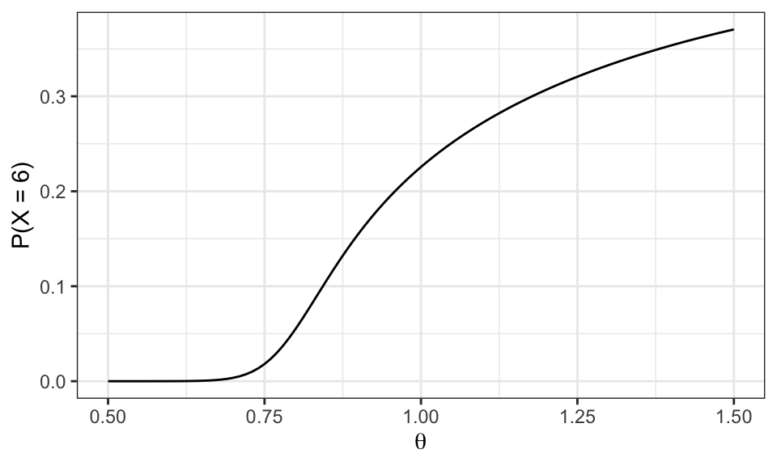
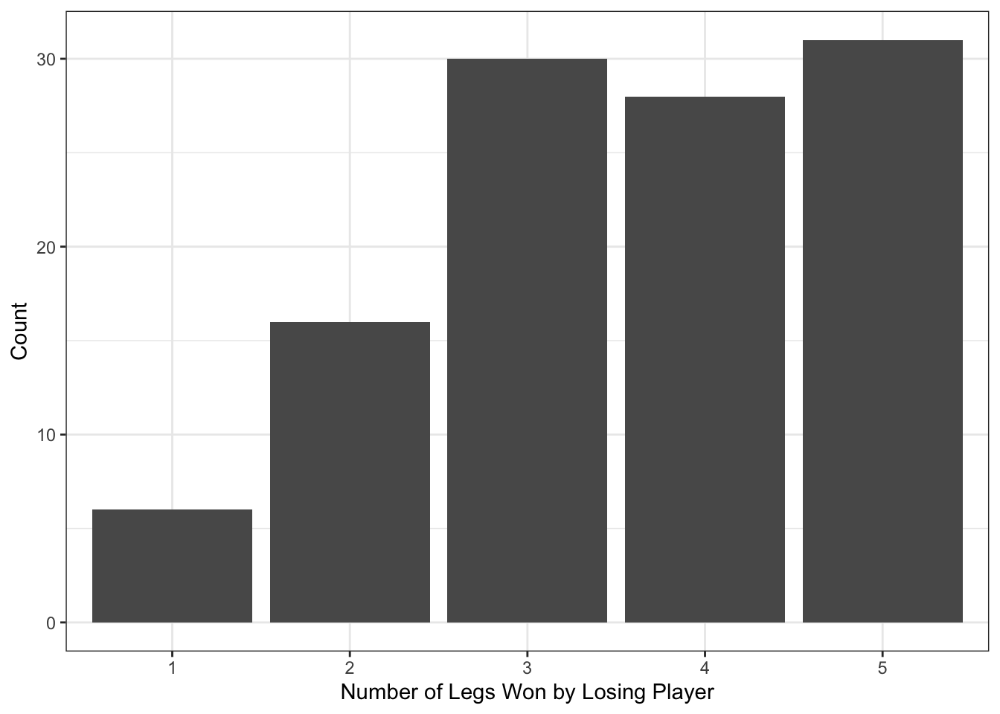
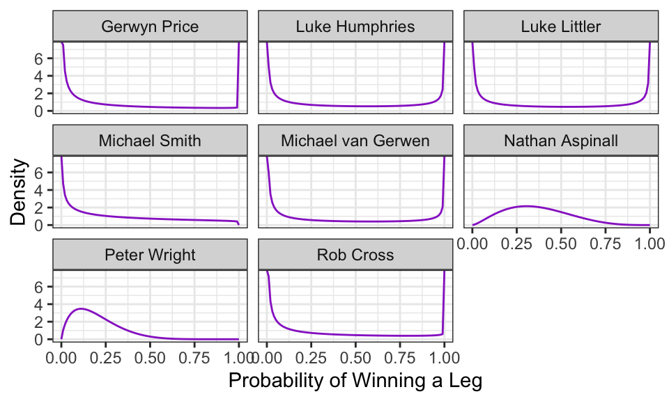

Complete the tasks below. Make sure to start your solutions in on a new line that starts with “Solution:”.
Make sure to use the Quarto Cheatsheet. This will make completing and writing up the lab much easier.
Make sure to use “enter” to make your code readable, so it doesn’t run off the page. I switched the Quarto document to automatically render to .pdf, so you can see what you’re submitting by default. You can switch back for the highlighting by moving the html block above the pdf block in the YAML header.
Don’t forget that you can copy-and-paste code when you’re doing something similar as we did in class!
Make sure to plot all computed probabilities. This is good ggplot practice AND will help make sure you don’t make a mistake when computing the probability.
1 Lab 8 Notes
1.1 Altham’s Multiplicative Binomial Distribution
The PMF for Altham’s Multiplicative Binomial Distribution is \[f_X(x) = \frac{1}{c} {n \choose x} p^x (1-p)^{n-x} \theta^{x(n-x)}I(x \in \{0, 1, ..., n\})\] where \[c = \sum_{i=0}^n {n \choose i} p^i (1-p)^{n-i} \theta^{i(n-i)}.\] Just so we start on the same page, I have included my R function for computing probability using this distribution.
2 Altham’s Multiplicative Beta Binomial Distribution
The PMF for Altham’s Multiplicative Beta Binomial Distribution is \[f_X(x) = \left[\int_{0}^1 \left(\frac{1}{c} {n \choose x} p^x (1-p)^{n-x} \theta^{x(n-x)}\right)\left(\frac{\Gamma(\alpha+\beta)}{\Gamma(\alpha)\Gamma(\beta)} p^{\alpha-1}(1-p)^{\beta-1}\right) dp\right]I(x \in \{0, 1, ..., n\})\]
Just so we start on the same page, I have included my R function for computing probability using this distribution.
Code
daltbbinom.single <-function(x, size, alpha, beta, theta){ integrand <-function(p) {sapply(p, # integrate will pass in a vector, so we use sapply to apply the followingfunction(p_val){# f(x|p) * f(p|alpha, beta)daltbinom(x, size, p_val, theta) *dbeta(p_val, alpha, beta) } ) }# Probability Mass at x=x# integrate(integrand, lower = 0, upper = 1)$value * (x>=0)*(x<=size)# I shrink the bounds below to avoid log(0)=-infinty# I use try() to catch when there is an error and avoid crashing res <-try(integrate(integrand, lower =1e-7, upper =1-1e-7)$value * (x>=0)*(x<=size), silent =TRUE)# If there is an error, return a near-zero probabilityif(inherits(res, "try-error")) return(0.1^6) res}# Write a function that works on a vectordaltbbinom <-function(x, size, alpha, beta, theta){sapply(X=x, FUN=daltbbinom.single, size=size, alpha=alpha, beta=beta, theta=theta)}
3 Question 1
In Lab 8, we use Altham’s Multiplicative Binomial Distribution. Your job was to interpret the impact of \(\theta\) in that equation. In this lab, we will model the number of legs won in a best of eleven (first to six) match.
To help us think about the interpretation, something that was challenging before, let’s try something a little more manageable.
3.1 Part a
Suppose a player has a 50% chance of winning a specific leg, that is let \(p=0.50\). Let’s look at the probability they win (\(x=6\)) legs in the match. Compute this probability over a sequence from \(\theta=0.5\) to \(\theta=1.5\) and plot it using a line where the \(x\)-axis is \(\theta\) and the \(y\)-axis is \(P(X=6)\).
Solution
Code
p =0.50x=6n=11#define parametersggdat =tibble(theta =seq(0.5, 1.5, by =0.01)) |>mutate(prob =daltbinom(x = x, size = n, prob = p, theta = theta) )
Figure 1: Probability of Winning 6 Legs in a Match as Theta Changes

3.2 Part b
Now, plot Altham’s Multiplicative Binomial Distribution under the same parameters with \(\theta=0.50\), \(\theta=1\), and \(\theta=1.5\). Use ncol=1 in facet_wrap() to plot the PMFs in a single column for comparing.
Solution
Code
p =0.50n=11#define parametersggdat =tibble(x =rep(0:n, times =3),theta =rep(c(0.5, 1.0, 1.5), each = n +1)) |>mutate(PMF =daltbinom(x = x, size = n, prob = p, theta = theta) #define PMF )
What is your best assessment of what \(\theta\) is doing in this setting. Consider when a 6-0 blowout is most likely, and when a 5-6 nail-biter is most likely. Note here we should treat the match as a fixed \(n=11\) as we did for \(n=3\) in Lab 8. Note: In lab 8, we saw that small \(\theta\) meant wins came in bunches (clumped together), so there were more 2-0 wins in a best of three series.
Solution Theta, again, makes win distributions more likely to cluster around extremes (0 or 11) when it is smaller (0.5), and makes win distributions more likely in the center (5-6) when it is larger. My assessment is that when theta is smaller, it is putting more emphasis on game-to-game results and skill, meaning that if a player has won several games in a row already they are more likely to win the next game. When theta is larger, games are more independent and the results are less reliant on each other.
4 Question 2
4.1 Part a
Altham’s Multiplicative Binomial Distribution does not typically simplify to the clean \(E(X)=np\) seen in the Binomial distribution, unless \(\theta = 1\). Write out the expression that would need to be solved to find \(E(X^k)\), and then write a function that computes it given the proposed parameter values \(p\) (prob) and \(\theta\) (theta).
Solution
Code
E.altbinom.k =function(k, size, prob, theta){ #create function x.vals =0:size #vector of x valuessum((x.vals^k) *daltbinom(x.vals, size, prob, theta))}
4.2 Part b
Describe how you can use your answer to part a to find Method of Moments estimates for the parameters \(p\) and \(\theta\) for Altham’s Multiplicative Binomial Distribution based on data.
Solution You can create a function with (par, data, size) and define the parameters p and theta as parameters 1 and 2. then you set m1 equal to the mean of the given data, m2 equal to the mean of the given data^2, and so on. Then, for E1 and E2, you set these equal to E.altbinom.k (the function from part a) with k = 1,2… Using what you wrote for m1, m2, … and E1, E2, … do c(E1-m1, E2-m2) which should result in (0, 0). Then use nleqslv, putting in fn, x, data, size to output the Method of Moments estimator based on the specific data. Method of Moments is an approximation, that gives back the maximum likelihood of observing a certain outcome.
4.3 Part c
Write a function that computes the log-likelihood for Altham’s Multiplicative Binomial Distribution, given data (x) and proposed parameter values \(p\) (prob) and \(\theta\) (theta).
Solution
Code
ll.altham =function(par, data, size, mle=FALSE){ p =ifelse(mle, 1/(1+exp(-par[1])), par[1]) theta =ifelse(mle, exp(par[2]), par[2]) # exp gives the exponential to ensure p and theta are positive ll =sum(log(daltbinom(x = data, size = size, prob = p, theta = theta))) #compute log likelihoodifelse(mle, -ll, ll) }
4.4 Part d
Describe how you can use your answer to part c to find Maximum Likelihood estimates for the parameters \(p\) and \(\theta\) for Altham’s Multiplicative Binomial Distribution based on data.
Solution We can use the log-likelihood function from part c to find Maximum Likelihood Estimates for p and theta by finding the parameter values that maximize the likelihood of the observed data. This can be done later using optim() to search for the values of p and theta that make the observed outcomes most probable. To ensure valid parameters, we can transform p to stay between 0 and 1 and theta to stay positive during optimization (in the ifelse statment in part c), then transform back to report the MLEs. A good starting point for optimization is the Method of Moments estimate from Part b.
5 Lab 10
Peter “Snakebite” Wright is a two-time Professional Darts Corporation World Champion (2020, 2022) and a former World No. 1. He is one of the sport’s most decorated players, winning nearly 50 PDC titles including the World Matchplay, UK Open, and multiple European Championships.
In 2024, he made The Premier League – a league involving the eight best players that runs every Thursday night from February to May. In this season, he won two of eighteen matches, securing only four points. The spread in legs won was -43, meaning he lost 43 more legs than he won. This performance was rather quite bad. He was soundly trounced in almost all his match ups.
The 2024 standings are below:
Rank
Player
1
Luke Littler
2
Luke Humphries
3
Michael van Gerwen
4
Michael Smith
5
Nathan Aspinall
6
Rob Cross
7
Gerwyn Price
8
Peter Wright
5.1 Summarize the 2024 Data
In pdc2024.csv, I have provided the data for the 2024 Premier League season. There are a few data cleaning steps to consider.
Remove any matches with no Score (e.g., a bye or walkover)
Nights 1 through 16 are best of 11 (first to 6), but the playoffs are extended. For consistency, keep nights 1 through 16 only.
Make two columns WinnerLegs and LoserLegs that keep track of the number of legs each player has won
Summarize the data. What do the data tell us about the breakdown of the results?
Figure 3: Distribution of Match Outcomes by Losing Legs

Table 1: Distribution of Match Outcomes
LoserLegs
count
prop
1
6
0.054
2
16
0.144
3
30
0.270
4
28
0.252
5
31
0.279
Table 2: Summary of Premier League Scores
mean_loser
sd_loser
median_loser
iqr_loser
skew_loser
kurt_loser
3.559
1.196
4
2
-0.374
-0.846
First I cleaned the data by removing matches without valid scores, taking out byes and walkovers, and restricting the dataset to Nights 1 through 16. The score variable was then separated into WinnerLegs and LoserLegs, which were converted to numeric values. Table 2 summarizes the distribution of match outcomes by the number of legs won by the losing player. The table shows both the frequency and proportion of matches for each possible value of LoserLegs. Table 3 then shows the mean, sd, median, iqr of the scores. The results indicate that matches are generally competitive, with a higher concentration of outcomes where the losing player wins several legs (4 or 5). In contrast, matches where the losing player wins very few legs (0 or 1) occur less frequently, meaning complete blowouts are relatively uncommon. Overall, the mean number of losing legs is approximately 3.559, with a standard deviation of 1.196. The median is 4, and the interquartile range is 2, further indicating that most matches are fairly close.
5.2 Altham’s Multiplicative Binomial Distribution
For each player in the 2024 season, use the number of legs won in each match to compute maximium likelihood estimates for \(p\) and \(\theta\). Note: The “for each” here can be done more efficiently with a function or a loop!
Create a vector containing the number of legs won by the player. Note sometimes you will need to pull from winner’s legs and sometimes from the loser’s legs.
Find the MLE for the player using this data. Ensure to report \(p\) and \(\theta\) for each player in a nicely formatted table. Note: In Lecture on Monday, we used transformations to restrict how optim() searches the parameter space. For example, here, you might consider p <- 1/(1+exp(-par[1])) and theta <- exp(par[2]).
Make comments about the MLEs in the context of the standings.
fit.altham.player =function(df) { x = df$LegsWon#find MLE fit =optim(par =c(0, 0),fn = ll.altham,x = x )tibble(p.hat =1/ (1+exp(-fit$par[1])),theta.hat =exp(fit$par[2]) )}
Table 3: Maximum Likelihood Estimates for Altham’s Model by Player
Player
p.hat
theta.hat
Gerwyn Price
0.383
1.020
Luke Humphries
0.461
1.205
Luke Littler
0.469
1.316
Michael Smith
0.426
1.047
Michael van Gerwen
0.431
1.023
Nathan Aspinall
0.403
1.186
Peter Wright
0.317
0.989
Rob Cross
0.395
1.014
The estimated values of p and theta vary across players, showing differences in both performance and match dynamics. p represents the probability of winning an individual leg, so players with higher values of p.hat tend to win a greater proportion of legs. The parameter theta adds dependence between legs. Values of theta < 1 make outcomes cluster more, leading to streaks and more extreme match outcomes. In contrast, theta > 1 produces more alternation between players, resulting in more balanced matches. Comparing these results to the empirical distribution of match outcomes, the presence of many close matches (e.g., 6–5) is consistent with models that allow for dependence between legs. Players with higher theta values tend to show less clustered performance, while those with theta closer to 1 behave more like the independent Binomial model. Overall, these results provide evidence that Altham’s model offers a more flexible and accurate model for showing the dynamics of match play.
5.3 Altham’s Multiplicative Beta Binomial Distribution
For each player in the 2024 season, use the number of legs won in each match to compute maxmium likelihood estimates for \(p\) and \(\theta\). Note: The “for each” here can be done more efficiently with a function or a loop!
Create a vector containing the number of legs won by the player. Note sometimes you will need to pull from winner’s legs and sometimes from the loser’s legs.
Find the MLEs for the player using this data. Ensure to report \(\alpha\), \(\beta\), and \(\theta\) for each player in a nicely formatted table. Note 1: Due to the computational complexity of integrate(), you should compute the logged probability for 0:6 once and add them according to the data in each player’s vector. Note 2: In Lecture on Monday, we used transformations to restrict how optim() searches the parameter space.
Plot the underlying Beta(\(\alpha\), \(\beta\)) distribution for each player. Note: Add the mean and variance of the Beta to the table of MLEs. Recall \[\begin{align*}
E(X) &= \frac{\alpha}{\alpha+\beta}\\
sd(X) &= \sqrt{\frac{\alpha\beta}{(\alpha+\beta)^2(\alpha+\beta+1)}}
\end{align*}\]
Make comments about the MLEs in the context of the standings. Note: The players alternate who throws first in a leg has the mathematical “head start” to reach a finish before their opponent can take another turn. Players alternate who throws first with each leg.
Solution
Code
ll.altham.bb =function(par, x, n =11) { alpha =exp(par[1]) beta =exp(par[2]) theta =exp(par[3]) #transform parameters k.vals =0:6 probs =sapply(k.vals, function(k) { #probabilities for each kdaltbbinom(k, size = n, alpha = alpha, beta = beta, theta = theta) }) ll =sum(log(probs[x +1])) # match probabilities to observed datareturn(-ll) # negative for minimization}
Table 4: MLEs for Altham Beta-Binomial Model by Player
Player
alpha.hat
beta.hat
theta.hat
mean
sd
Gerwyn Price
0.264
0.917
3.175
0.224
0.282
Luke Humphries
0.331
0.490
6.391
0.403
0.363
Luke Littler
0.283
0.384
10.797
0.425
0.383
Michael Smith
0.534
1.068
2.245
0.334
0.292
Michael van Gerwen
0.219
0.454
5.001
0.325
0.362
Nathan Aspinall
2.468
4.338
1.492
0.363
0.172
Peter Wright
1.786
7.289
1.214
0.197
0.125
Rob Cross
0.268
0.813
3.202
0.248
0.299
Code
library(dplyr)library(tidyr)library(ggplot2)x.vals =seq(0, 1, length.out =100)# Expand the data frame so each player has a row for each xplayer.density <- player.results.bb |>select(Player, alpha.hat, beta.hat) |>crossing(x.val = x.vals) |>rowwise() |>mutate(density =dbeta(x.val, alpha.hat, beta.hat)) |>ungroup()ggplot(player.density, aes(x = x.val, y = density)) +geom_line(color ="darkorchid") +facet_wrap(~ Player) +labs(x ="Probability of Winning a Leg",y ="Density", ) +theme_bw()
Figure 4: Estimated Beta Distributions by Player

The estimates of alpha, beta, and theta account for variation in player performance by allowing the probability of winning a leg to vary across matches. The mean of the Beta distribution represents the average probability of winning a leg, while the standard deviation captures variability in performance. Players with higher mean values tend to perform better overall. However, the nonzero variance indicates that performance is not constant, and may fluctuate across matches/opponents. This highlights a significant limitation of the standard Binomial model, which assumes a fixed probability of success across matches. The parameter theta continues to capture dependence between legs. As in the multiplicative binomial model, values of theta < 1 indicate clustering of outcomes, while values near 1 suggest approximate independence (same as previous observation). Compared to the simpler models, the multiplicative Beta-Binomial provides the best fit for the observed data by accounting for both differences in player ability and dependence between legs. This is particularly important for something like darts matches, where players alternate who throws first, creating potential advantages across legs and matches.
5.4 Executive Summary
Summarize the work you’ve done here to provide a brief (200-300 word) data-driven summary of the 2024 Premier League season using your work in Lab 10. Your summary should be professional, clear, and all claims should be corroborated with statistical support.
Solution The 2024 Premier League Darts season exhibits a strong overall level of competitiveness, with most matches decided by relatively small margins. After cleaning the dataset to include only standard-format matches (Nights 1–16), the distribution of outcomes shows that losing players most frequently won 4 or 5 legs, while extreme outcomes such as 6–0 or 6–1 were rare. The mean number of losing legs was approximately 3.56 with moderate variability (SD around 1.20), indicating that matches were typically competitive.
To more deeply understand player performance and match dynamics, Altham’s multiplicative Binomial model was used to estimate each player’s probability of winning a leg (p) and the dependence parameter theta. Higher estimated values of p aligned closely with stronger players standings, confirming that leg-level success translates directly to overall match performance. The theta parameter created additional dependence between legs: values less than 1 indicated clustering (streaks of consecutive legs), while values greater than 1 suggested alternating outcomes. This highlights that match play is not purely independent from leg to leg.
Extending the model further to the multiplicative Beta-Binomial distribution allowed the probability of winning a leg to vary across matches. This added flexibility makes it possible to capture both differences in player ability and variability in performance across legs. Players with higher estimated means in the Beta distribution performed better overall, while nonzero variance indicated fluctuations in form across matches.
Overall, the analysis shows that the Beta-Binomial model provides the most realistic representation of match dynamics by incorporating both leg-to-leg dependence and variability in player performance, offering the most accurate statistical description of the 2024 season.